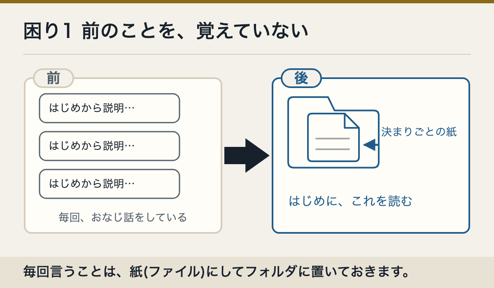
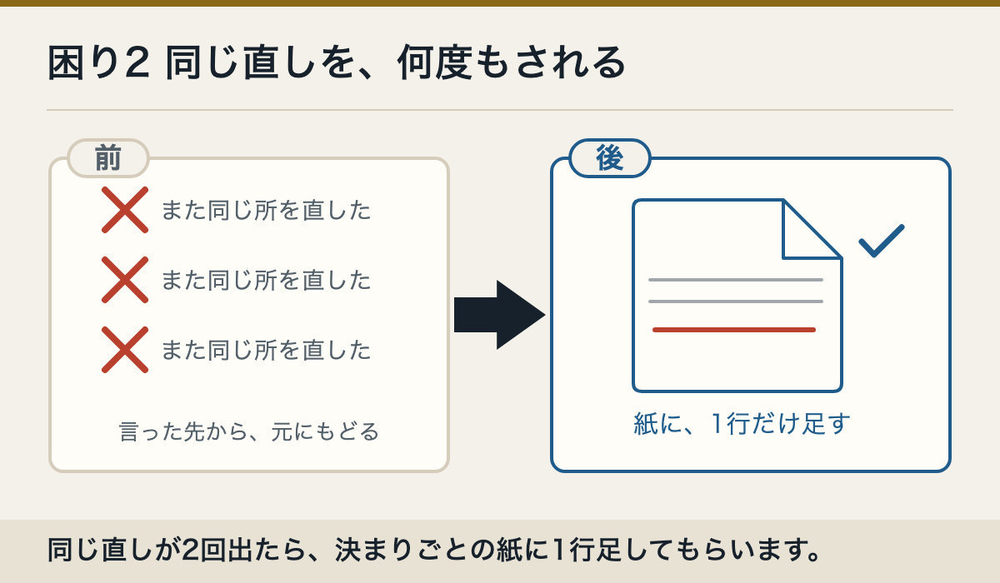
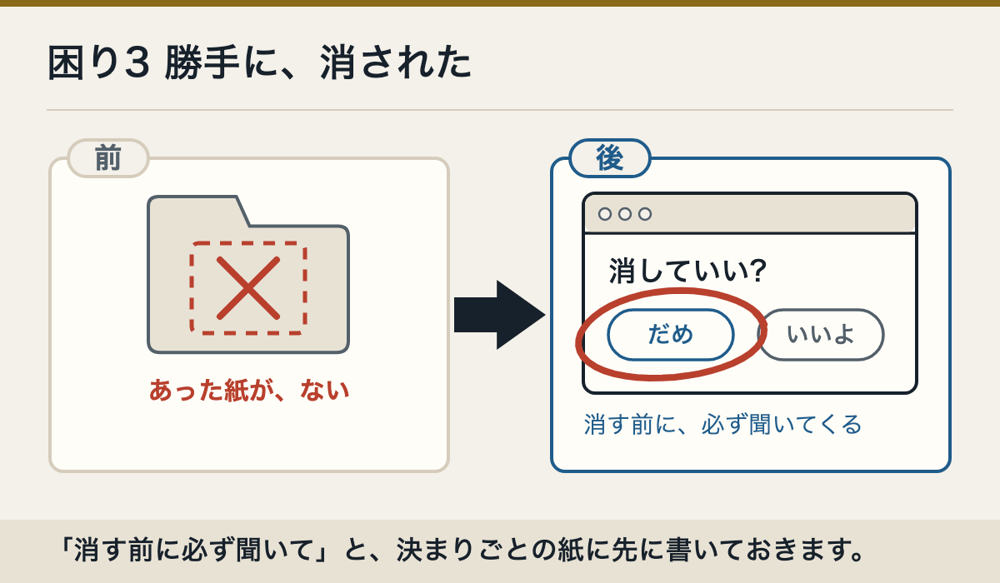

前の話を覚えていない
新しい会話では、前の会話をそのまま覚えていません。大事なことを約束のメモへ書いてもらいます。
ここまでで決まったことを、次の会話でも読めるメモにまとめてください。
同じ訂正を繰り返す
いったん止めます。そのうえで、いま正しい状態と、どうなったら終わりかを、一つのメモにまとめてもらいます。
いったん止めてください。私が直してほしいと言ったことと、まだ終わっていないことを箇条書きにしてください。再開する前に見せてください。
勝手に消された
まず、止めるボタンを押して作業を止めます。次に、消されたものの名前を書いて、元に戻すように頼みます。
いったん止めてください。さっき消した［ファイルの名前］を、元に戻してください。戻せないなら、戻せないと言ってください。いちばん確かなのは、先に約束しておくこと
「消す前に、必ず私に聞いて」を約束のメモに入れておきます。すると、消される前に確認の画面が出ます（最初の一言の3つ目）。
Claude Codeには、Claudeが自分で直したファイルを前の状態に戻す「巻き戻し」の仕組みがあります。ただし、Macのアプリの画面でその仕組みをどう使うかは、公式に書かれていません。うちでもまだ確かめていません。
